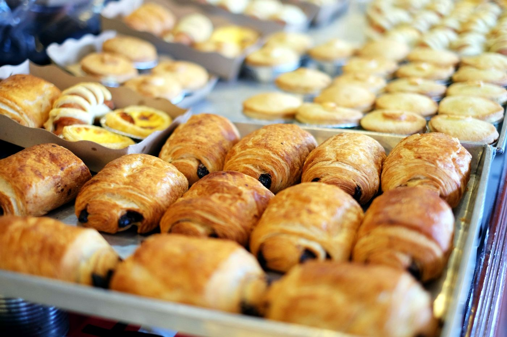
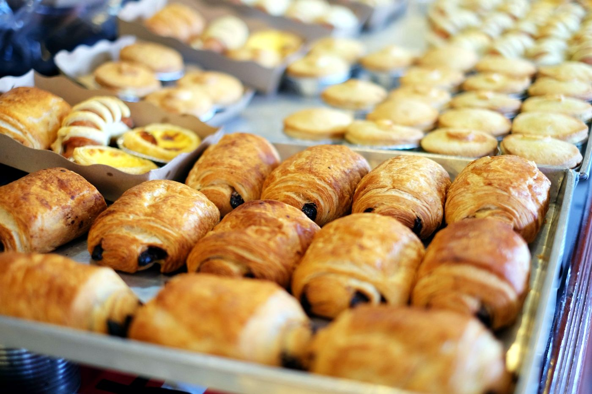

Située au cœur de Saint-Denis, La Belle Époque vous propose chaque jour pains traditionnels, viennoiseries dorées, pâtisseries raffinées et douceurs sucrées, préparés avec passion.
 


Adresse : 2 Rue des Rougemonts, 93380 Saint-Denis
Téléphone : 06 64 37 78 58
Horaires :
Lun–Ven : 7h–19h
Samedi : 7h–18h
Dimanche : 7h–13h